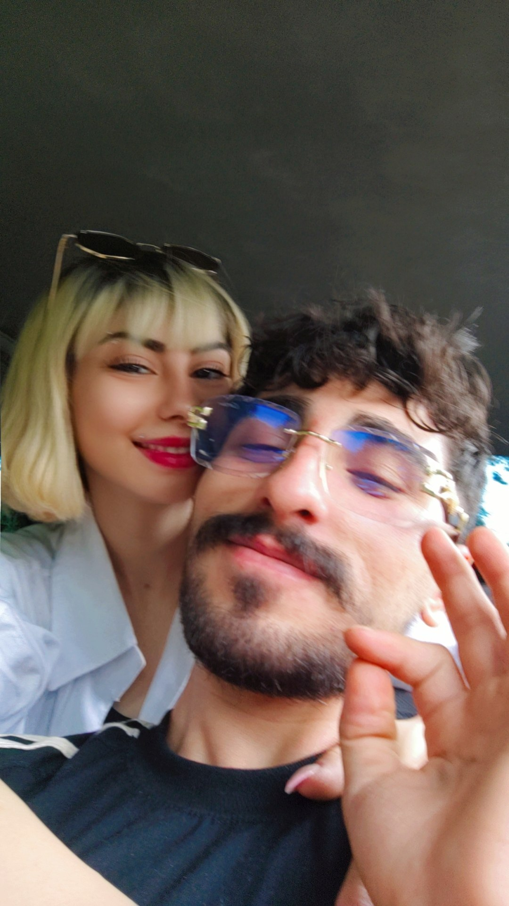

Happy Birthday
Zohreh 🤍
20 Mordad • Happy 30th Birthday
که بیخبر... تبدیل شد به یکی از قشنگترین اتفاقهای زندگی من... 💜
یه بار بهم گفتی...
که خیلی دوست داری
یکی برات نامه بنویسه...
نمیدونم این همون نامهایه
که توی ذهنت بود یا نه...
ولی این...
از ته دل...
فقط برای تو نوشته شده...
🤍
تولدت مبارک، جوجهی من... 🎂🤍
۳۰ سال پیش...
یه دختر به دنیا اومد...
که خودش خبر نداشت
یه روزی قراره
اینقدر برای یه نفر عزیز باشه...
شاید خودتم ندونی...
ولی از وقتی وارد زندگیم شدی...
خیلی از روزهای معمولی من...
دیگه معمولی نبودن...
هنوز اولین باری که
بعد از کار رفتیم
اون پارک نزدیک محل کارمون...
رو دقیق یادمه...
نه رستوران لوکسی بود...
نه جای خاصی...
فقط یه پارک ساده...
و دو نفر...
که ساعتها با هم حرف میزدن...
تو خجالت میکشیدی...
گاهی فقط لبخند میزدی...
و من همون موقع
با خودم گفتم...
«چه حس عجیبی داره
کنار این دختر بودن...»

شاید اون روز...
هیچکدوممون فکر نمیکردیم
یه خاطرهی به این سادگی...
اینقدر برای من
موندگار بشه...
بعدش...
اولین آهنگی که
با هم گوش دادیم...
«با تو» - ابی
بود...
از اون روز...
هر بار اتفاقی
اون آهنگ پخش میشه...
قبل از اینکه
به شعرش فکر کنم...
یاد تو میفتم...
جوجه...
یه چیزی رو هیچوقت بهت نگفتم...
من همیشه
وقتی بهت نگاه میکنم...
اول چشمات رو میبینم...
بعد گونههات...
همون گونههایی که
وقتی میخندی...
انگار دنیا هم باهات لبخند میزنه...
امروز که وارد ۳۰ سالگی میشی...
فقط یه آرزو دارم...
همیشه بخندی...
همیشه سلامت باشی...
و همیشه همون زهرهای بمونی
که با خندههاش
حال آدمهای اطرافش رو خوب میکنه...
مرسی که هستی...
مرسی که باعث شدی
یه پارک ساده...
یه آهنگ...
و حتی یه روز کاری...
برای من تبدیل به خاطرههایی بشن
که هر وقت یادشون میافتم...
بیاختیار لبخند میزنم...
اگر یه روز...
سالها بعد...
دوباره این صفحه رو باز کردی...
امیدوارم
اول لبخند بزنی...
بعد یادت بیاد...
یه نفر...
یه روزی...
از ته دلش
این نامه رو فقط برای تو نوشت...
تولدت مبارک
جوجهی من... 🤍